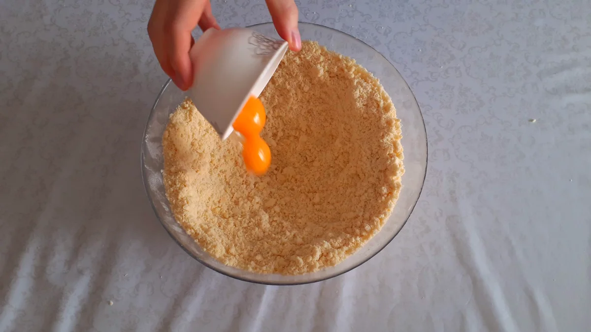

Готовим восхитительную турецкую пахлаву с ярким вкусом восточной сказки, обладающей настолько ароматной начинкой, что после приготовления, те кто попробует этот десерт, буду долго оставлять восторженные отзывы. И это не удивительно, ведь ореховая начинка с нежным тестом и ароматным мёдом, принесут много положительных эмоций всем, кто хоть раз попробует, этот десерт, устоять от которого просто невозможно. Пирожных получается много на праздничное мероприятие или на большую семью. Большой плюс этих десертов, это то, что они очень долго хранятся в холодильнике в отличие от десертов с кремом. Турецкая пахлава после приготовления имеет насыщенный вкус, нежного теста с медово-ореховой начинкой. А аромат мёда только усиливает вкус, этого замечательного кондитерского изделия, популярного не только в Турции, но и во всём Мире. Тесто настолько вмешалось в начинку, что стало единым целым в этом изделии. Обязательно приготовьте, эти восхитительные пирожные и порадуйте себя и своих близких изысканным вкусом домашней выпечки. Рекомендум подавать турецкую пахлаву к горячему, крепкому чаю.
Мука – 900 г;
Сливочное масло – 400 г;
Сметана – 400 г;
Желтки – 2 шт; Сода – 5 г;
Мука для обсыпки и раскатки теста.
Грецкие орехи – 400 г;
Сахар – 300 г;
Сливочное масло – 50 г;
Кардамон – 3 г; Ванилин – 3 г.
Желтки – 2 шт;
Мёд – 120 г;
Сливочное масло – 30 г.
Дроблёные фисташки.
Общий вес готового изделия составляет 2,5 кг.
По данному рецепту масло для теста прохладное из холодильника. Мёд можно как натуральный, так и кондитерский.
Для теста в муку добавляем сливочное масло.
Перетираем масло в муке, для получения масляно-мучной крошки.
Делаем углубление. Добавляю желтки.
В сметану всыпаем соду и перемешиваем.
Выкладываем всю сметану в ёмкость с масляно-мучной крошкой. Перемешиваем крючками миксера, чтобы получить однородное сметанное тесто. При отсутствии миксера, вымесить тесто можно руками.
Вот такое тугое, сметанное тесто получилось.
Рабочую поверхность присыпаем мукой. Вкладываем тесто и сразу начинаем его вымешивать в течение 2х минут.
Руками формируем из теста колбаску.
Разделяем тесто на 5 фрагментов, где 2 фрагмента должны быть по весу тяжелее остальных 3х.
Два фрагмента из теста вышли по 440 грамм, это будут самый нижний и самый верхние слои, а остальные, это внутренние слои с ореховой начинкой. Это делается для того, чтобы внутренние слои успели выпечься, а внешние не подгорели. Вес ваших комков из теста, может отличаться от заявленного в этом рецепте, так как продукты разные.
Из теста формируем колобки. Подсыпая мукой, укладываем сметанное тесто в тару.
Закрываем пакетом и убираем в холодильник.
Грецкие орехи для начинки необходимо раздробить в крошку. Используем для дробления блендер, при отсутствии блендера, орехи можно размолоть скалкой.
Фисташки для оформления раздробили в очень мелкую крошку.
В грецкие орехи добавляю сахар, кардамон и ванилин. Перемешиваем ручным венчиком, чтобы все ингредиенты вмешались.
Начинка для пахлавы готова.
На стол выкладываем первый колобок из теста, весом 440 грамм и слегка растягиваем руками, подсыпая муку.
Затем скалкой формируем прямоугольный пласт по диаметру своего противня. Диаметр моего противня составляет 36х32 сантиметра. Размер вашего противня может отличаться, поэтому формируйте пласты в соответствии с размером вашего противня.
С помощью линейки определяем размер раскатанного пласта из теста.
Осторожными движениями наматываем прямоугольный пласт скалку.
Перекладываем тесто на предварительно выстеленный пекарской бумагой, противень.
Распределяем тесто по всей площади противня.
Начинку для пахлавы заранее распределяем по ёмкостям, вес каждой порции составил 170 грамм.
Растопленным сливочным маслом с помощью силиконовой кисточки, смазываем тесто.
Обсыпаем по всей поверхности теста ореховую начинку.
Равномерно распределяем начинку по всей поверхности теста с помощью силиконовой лопатки. Убираем противень с заготовкой в холодильник. С оставшимися заготовками проделываем идентичные манипуляции. Каждый раз после раскатки нового пласта, укладывая его поверх пласта с ореховоё начинкой. Таким образом должен получиться слоистый пирог с 5 пластами из теста.
Последний 5 большой пласт в 440 грамм я смазываем желтком с помощью силиконовой кисточки.
Делаем диагональную разметку при помощи линейки.
Осторожно прорезаем верхний пласт ножом, чтобы нанести разметки по всему периметру теста в виде ромбиков.
Очень важно на этом этапе, не делать глубоких прорезов, а только нанести разметки.
Убираем противень с пахлавой в разогретую до 170 градусов духовку на 15 минут.
Для приготовления глазури в тёплый мёд вливаем растопленное сливочное масло.
Перемешиваем до однородного состояния. Если мёд плотный, рекомендуем разогреть его до тёплого или горячего состояния, чтобы медовый сироп напитал начинку внутри пахлавы.
Вот такая жидкая глазурь получилась.
Достаем противень с пахлавой из духовки и делаем острым ножом, глубокие надрезы, прорезая намеченные линии до самого нижнего пласта.
Глазирую пахлаву медовым сиропом, нанося её сверху, при этом также напитываем начинку сквозь надрезы.
Для украшения пахлавы, обсыпаем её молотыми фисташками. Убираем противень с пахлавой в разогретую до 170 градусов духовку на 30 минут.
Приятного аппетита!